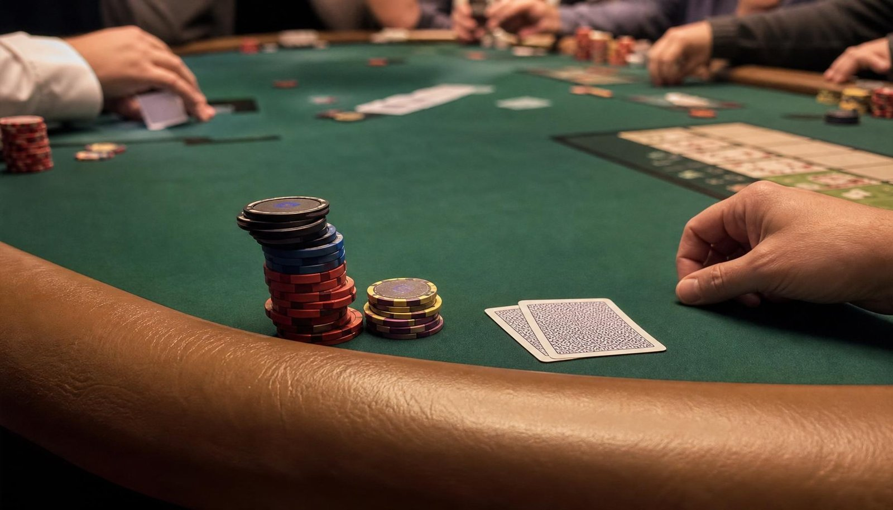
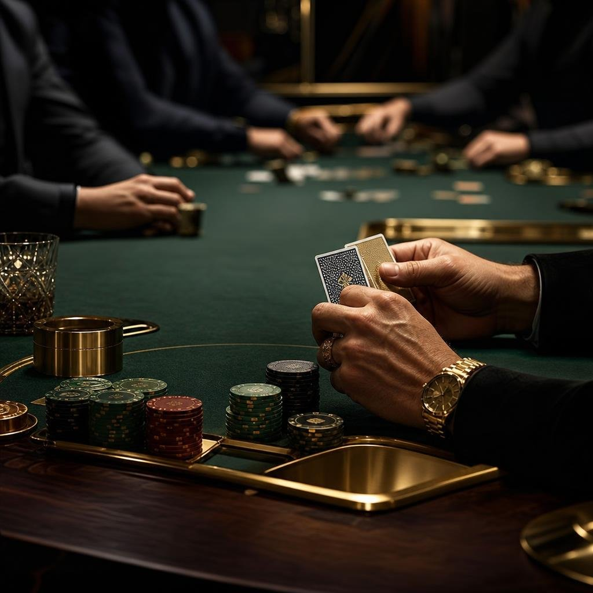

On aide les joueurs de poker à devenir rentables et à générer un revenu régulier aux tables
Découvrez comment générer jusqu'à 5000 € par mois grâce au poker, sans subir la variance.
Découvrir la formation offerte
Ils ont rejoint La Salle du Temps pour devenir rentables au poker
L'accompagnement n°1 pour les joueurs de poker
Avec La Salle du Temps, tu vas accéder à toutes les clés pour générer jusqu'à 5000 € tous les mois grâce au poker, sans dépendre de la chance et sans jouer des limites énormes.
- Une communauté de joueurs motivés
- Un accompagnement personnel dédié à ta réussite
- Accès à vie

Témoignages vidéo
Nos joueurs partagent leur expérience

Qui suis-je ?
Moi c'est Vincent, je vis pleinement du poker depuis plusieurs années. J'ai commencé à grinder en 2019. Entre-temps, je suis passé par les tables de Montréal, Vegas et Malte, et je vis aujourd'hui à Budapest. L'année dernière, j'ai généré plus de 100 000 € de profit aux tables.
Aujourd'hui, j'accompagne les joueurs à passer de perdant ou break-even à libre financièrement grâce au poker, en les aidant à générer entre 1500 et 5000 € tous les mois (suivant le temps passé aux tables).
L'accompagnement n°1 pour les joueurs
de poker
Une méthode de prise de décision basée sur les probabilités
Une préparation mentale pour performer aux tables
Un accompagnement personnalisé
Questions fréquentes sur La Salle du Temps
Clarifie tes doutes pour te lancer en confiance dans l'aventure La Salle du Temps
Qu'est-ce que l'accompagnement La Salle du Temps ?
La Salle du Temps est un mentorat destiné aux joueurs de poker qui veulent développer un revenu régulier aux tables. Je les aide à générer un revenu stable en CashGame, tournoi ou autres formats.
Ce programme est-il adapté à tout le monde ?
Non. Il est destiné aux joueurs réellement motivés à devenir rentables, qu'ils stagnent, soient break-even ou perdants aujourd'hui. Les débutants déterminés sont les bienvenus.
J'ai déjà suivi d'autres formations de poker. Est-ce que ça peut m'aider quand même ?
La plupart des joueurs que j'accompagne avaient déjà étudié le poker avant. Ce n'est pas un problème. La Salle du Temps est faite pour toi si tu veux enfin une méthode de décision claire et un accompagnement humain pour passer à la rentabilité.
Quelle est la différence avec les autres formations de poker ?
La plupart des formations t'enseignent des concepts isolés : des ranges, de la GTO, du postflop. Le souci, c'est que tout reste cloisonné et qu'au moment de décider, tu joues au feeling. La Salle du Temps te donne un système complet où chaque élément se connecte, et je t'accompagne personnellement pour l'appliquer à ton jeu.
Combien de temps faut-il y consacrer ?
En moyenne 1 heure par jour, soit 7 à 10 heures par semaine. Même avec un travail ou une vie de famille, c'est suffisant pour mettre la méthode en place et progresser.
Est-ce que ça marche en tournoi ou seulement en CashGame ?
La méthode fonctionne dans tous les formats. Dans le mentorat nous travaillons ton format de jeu, l'idée est que le programme est adapté à tes besoins & problématiques.
Le poker, ce n'est pas juste de la chance ?
À court terme, la variance joue. Mais sur la durée, ce sont tes décisions qui font ta rentabilité. Toute la méthode sert justement à prendre de meilleures décisions, encore et encore, pour que le résultat suive.
Combien de temps pour voir des résultats ?
Ça dépend de ton niveau d'engagement et de ta rapidité à appliquer la méthode. Certains joueurs voient des changements dès les premières semaines, d'autres mettent un peu plus de temps. Je respecte le rythme de chacun et je t'accompagne à chaque étape.
Pourquoi les places sont-elles limitées ?
Parce que c'est un vrai accompagnement, pas une formation où tu es seul face à des vidéos. Comme chaque joueur me demande du temps, je préfère travailler avec un petit groupe motivé plutôt qu'avec une foule.
Est-ce que je ne peux pas y arriver seul, avec les infos gratuites en ligne ?
Oui, tu peux essayer seul. Mais l'objectif du mentorat, c'est d'accélérer ta progression, de t'éviter de perdre des mois à tester des choses qui ne marchent pas, et de ne pas griller ta bankroll en chemin.